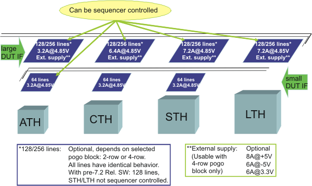

Utility line capabilities in relation to the system hardware
The capability of the utility lines depends on the test head type, the DUT interface and the type and version of the installed wiring board.
DUT interface
Two types of DUT interfaces are available for the test systems:
- DUT Scale interface or large DUT interfaceThe number of utility lines on a test system, fitted with a DUT Scale interface or large DUT interface, depends on the type of the utility pogo blocks:
- 2-row utility pogo blocks: 128 utility lines
- 4-row utility pogo blocks: 256 utility lines and additionally access to the optional External utility power supply (V93000 systems)
- Small DUT interface
Test systems fitted with the small DUT interface (ATH, CTH and STH) provide 64 utility lines. The combination ATH/small DUT interface supports sequencer control of utility lines.
Details of DUT interface related layouts and utility lines are provided in Utility line assignments and Utility line characteristics.
Dynamic (sequencer‑controlled) and static utility lines
Utility lines can be controlled statically (workstation‑controlled) or dynamically (sequencer‑controlled).
- Dynamic (sequencer‑controlled) utility lines can be controlled by the pattern sequencer. They are made available by an active Wiring board. For more information, refer to Sequencer-controlled utility lines.
- Static only utility lines can be controlled only by the SmarTest software. They
are made available by the Clock board and passed through a passive Wiring board
to the DUT interface. The following systems support only static utility lines:
- CTH with small DUT interface
- STH with small DUT interface
For more information refer to SmarTest 7 dependencies between static and dynamic access.
Utility line capabilities in relation to the hardware configuration
The following graphics and table show the utility line capabilities in relation to the test head type, the DUT interface and the type and version of the installed wiring board.

| Test head type | Wiring board HLA number | Wiring board serial number | Utility line type | Number of utility lines | External utility power supply |
|---|---|---|---|---|---|
| A-Test Head | E8015-66415 | N/A | Static and dynamic access | 64 | No |
| E8015-66425 | N/A | Static and dynamic access | 128/256 | Optional for 256 lines | |
| Compact Test Head | E8014-66405 | N/A | Static access only | 64 | No |
| E8014-66415 | < 1000 | Static and dynamic access | 128 | No | |
| E8014-66415 | >= 1000 | Static and dynamic access | 128/256 | Optional for 256 lines | |
| Small Test Head | E8002-66405 | N/A | Static access only | 64 | No |
| E8002-66420 | < 2000 | Static access only | 128 | No | |
| E8002-66420 | >= 2000 | Static and dynamic access | 128/256 | Optional for 256 lines | |
| Large Test Head | E8002-66485 | < 2000 | Static access only | 128 | No |
| E8002-66486 | < 5000 | Static access only | 128 | No | |
| E8002-66485 | >= 2000 | Static and dynamic access | 128/256 | Optional for 256 lines | |
| E8002-66486 | >= 5000 | Static and dynamic access | 128/256 | Optional for 256 lines |
Information on the installed Wiring board type
The file /var/opt/hp93000/soc_common/diagnostic/edc_codes_pon contains information on the hardware installed in your test system.
Note that it also provides information on the FPGA binaries version present on the active Wiring board. You need SmarTest version 7.2 or higher to read the version of the FPGA binaries.
For information on EDC codes refer to EDC codes at power-on and Reading the result file edc_codes.
Functional changes
- Introduced in SmarTest 7.2.0